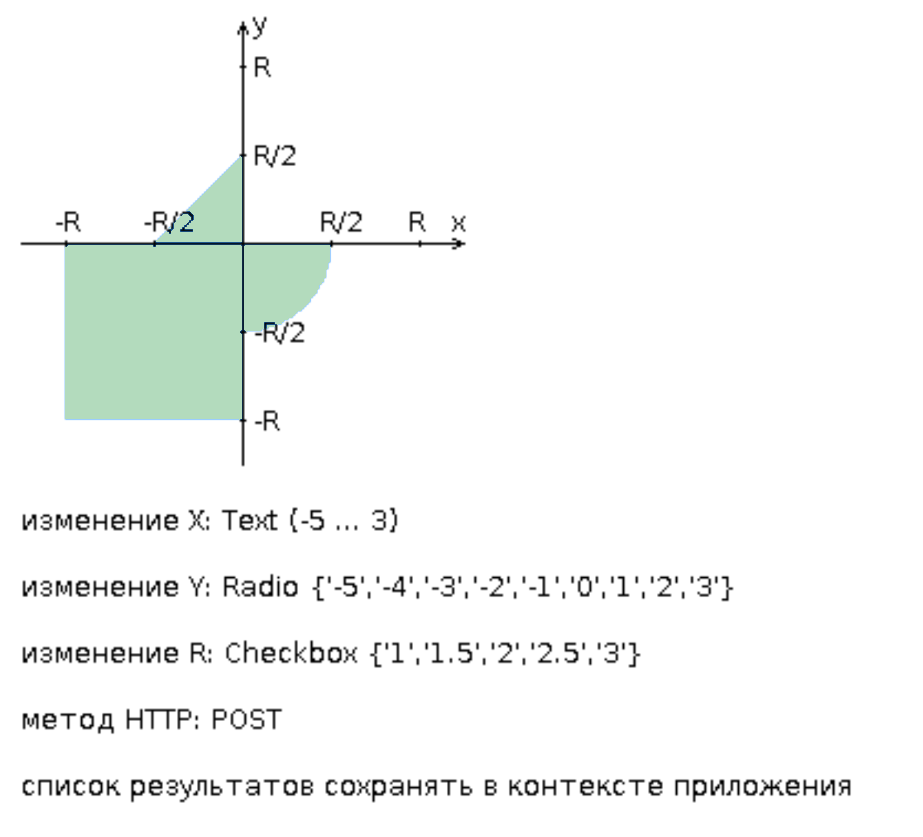

Разработать веб-приложение на базе сервлетов и JSP,
определяющее попадание точки на координатной плоскости в заданную область.
Приложение должно быть реализовано в соответствии с шаблоном MVC и состоять из следующих элементов:
- ControllerServlet, определяющий тип запроса, и, в зависимости от того,
содержит ли запрос информацию о координатах точки и радиусе, делегирующий его обработку
одному из перечисленных ниже компонентов. Все запросы внутри приложения должны передаваться
этому сервлету по POST, остальные сервлеты с веб-страниц напрямую вызываться не должны.
- AreaCheckServlet, осуществляющий проверку попадания точки в область на
координатной плоскости и формирующий HTML-страницу с результатами проверки. Должен обрабатывать все запросы,
содержащие сведения о координатах точки и радиусе области.
- Страница JSP, формирующая HTML-страницу с веб-формой.
Должна обрабатывать все запросы, не содержащие сведений о координатах точки и радиусе области.
Разработанная страница JSP должна содержать:
- "Шапку", содержащую ФИО студента, номер группы и номер варианта.
- Форму, отправляющую данные на сервер.
- Набор полей для задания координат точки и радиуса области в соответствии с вариантом задания.
- Сценарий на языке JavaScript, осуществляющий валидацию значений, вводимых пользователем в поля формы.
- Интерактивный элемент, содержащий изображение области на координатной плоскости
(в соответствии с вариантом задания) и реализующий следующую функциональность:
Если радиус области установлен, клик курсором мыши по изображению должен обрабатываться JavaScript-функцией,
определяющей координаты точки, по которой кликнул пользователь и отправляющей полученные координаты
на сервер для проверки факта попадания.
В противном случае, после клика по картинке должно выводиться сообщение о невозможности определения координат точки.
После проверки факта попадания точки в область изображение должно быть обновлено
с учётом результатов этой проверки (т.е., на нём должна появиться новая точка).
- Таблицу с результатами предыдущих проверок. Список результатов должен браться из контекста приложения.
Страница, возвращаемая AreaCheckServlet, должна содержать:
- Таблицу, содержащую полученные параметры.
- Результат вычислений - факт попадания или непопадания точки в область.
- Ссылку на страницу с веб-формой для формирования нового запроса.
Разработанное веб-приложение необходимо развернуть на сервере WildFly.
Сервер должен быть запущен в standalone-конфигурации,
порты должны быть настроены в соответствии с выданным portbase,
доступ к http listener'у должен быть открыт для всех IP.
